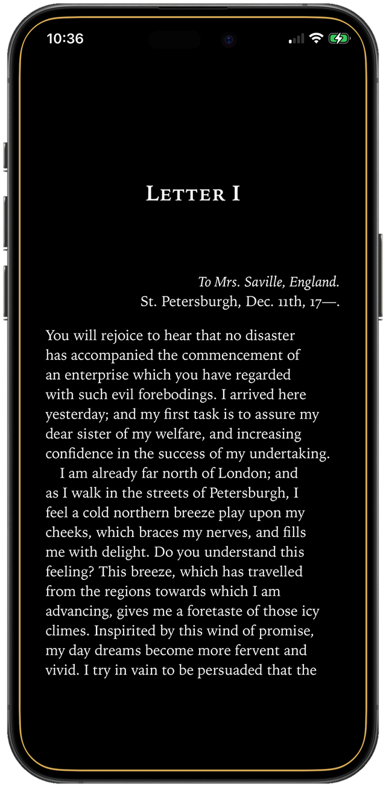

Your attention span is trained, not fixed
Deep reading is a skill with a fitness curve. Every long chapter you finish strengthens it; every hour of short-form scrolling trains the opposite reflex — expect a reward every fifteen seconds, or bail. After a few years of feeds, your brain treats a page of prose the way an ex-runner's legs treat a hill: technically capable, loudly complaining.
The decay loop is self-reinforcing: reading feels harder → you read less → it gets harder still. Researchers who study reading habits describe exactly this spiral — reduced stamina leads to avoidance, and avoidance reduces stamina. The good news: the loop runs in reverse too. Stamina rebuilds with exposure, faster than you'd expect.
Why you can't white-knuckle your way back
The standard advice — "just put the phone in another room and read for an hour" — fails for the same reason crash diets fail. Hour-long sessions at your current fitness level feel punishing, you associate books with struggle, and after three virtuous evenings you quit. Worse, the phone comes back and the interval training resumes in the wrong direction.
You didn't lose your attention span in a week. You won't rebuild it in one either — but you can rebuild it in minutes a day.
The rebuild protocol
- Start insultingly small. Five pages a day. Below the level where your brain bothers to resist. The point isn't progress today — it's showing your brain that pages still pay off.
- Read at your trigger moments. Attach pages to the exact moments you'd normally scroll. Those restless windows are where the retraining happens — each one you convert weakens the fifteen-second reflex and strengthens the page-length one.
- Choose gripping, not impressive. Rebuild with Dumas, Austen, Conan Doyle — books engineered to pull you forward. Ulysses can wait a season.
- Protect the session from the slot machine. During your pages, the feed must be genuinely unavailable — not willpower-unavailable, actually unavailable. One "quick check" resets your immersion to zero.
- Let the streak do the motivating. A visible chain of reading days turns stamina-building from a vague hope into a game you're winning.
Most people feel the shift inside three weeks: the paragraph re-reads stop, then one day you look up and forty minutes are gone. That's the afternoon-disappearing feeling coming back online.
How Block&Read runs the protocol for you
- Your trigger moments are covered: reach for a blocked app and the book opens — the restless window becomes a training rep automatically.
- The daily goal enforces "insultingly small": set five pages; the apps unlock when you're done, and nothing stops you from continuing.
- The session is protected: the distracting apps are the ones locked behind the pages — the slot machine literally can't interrupt.
- Gripping classics included: a free shelf of page-turners in English and Spanish, with 75,000+ more a search away (Premium).
- The streak and stats chart your stamina coming back: pages per week, time read, books finished.

Finish a book again. Then another.
Free to download · No ads, no accounts, no tracking
Get Block&Read